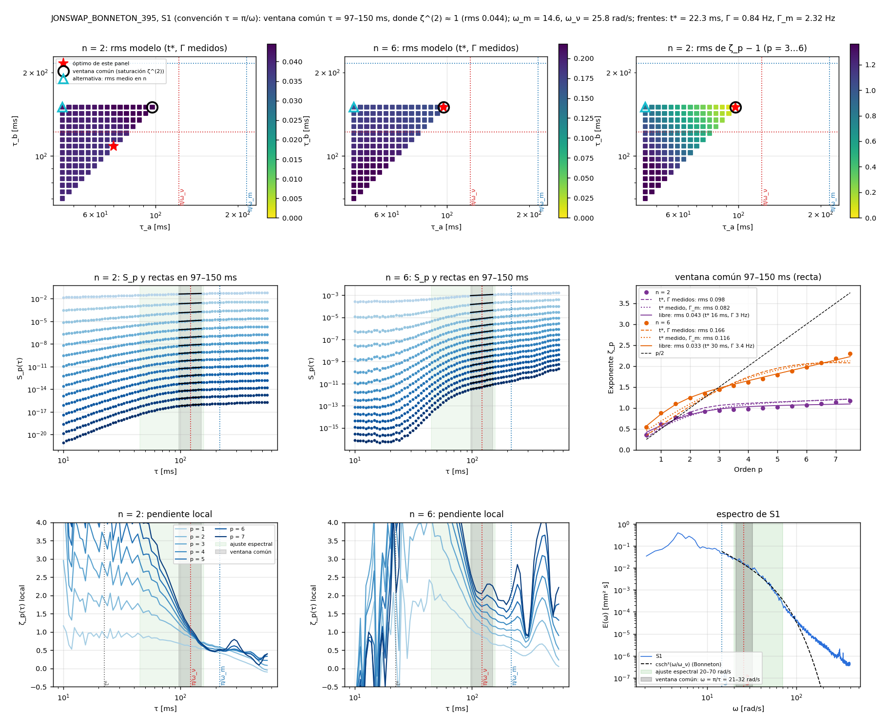

Journal Week 43
Table of Contents
- Referencias
- 2026-10-20
- [15:30] Referencia para medir con cámaras laterales: Redor et al. (2021)
- [15:40] Excedencia de crestas en las tres iteraciones y rotura entre sensores → reporte
- [16:30] Pendiente: testear el índice de rotura con la cámara de costado
- [16:45] Día 2: excedencia de crestas también en el tramo de muchos forzados de los combinados
- [17:30] PDFs por medición del Día 1 y modelo empírico de crestas saturadas
- [18:00] Sp de S1 entre ωm y ων: Burgers con choques de ancho finito (Ricard & Falcon 2023)
- [18:30] Sp de S1 con parámetros libres y choques de Poisson
- [18:25] Reporte de intermitencia (S1, Día 1): teoría de ruido de disparo de olas coherentes
- 2026-10-21
- [11:06] Agua del tanque: posible suciedad por las obras en el Labo
- [11:06] Sp de S1: modelo de Ricard & Falcon (2023) en una ventana común dentro del ajuste espectral
- [11:25] Modelo de Ricard & Falcon con ventana común: las 8 mediciones del Día 1
- [12:13] Pendiente: sujetacables impresos en 3D
- [12:16] Pendientes: estado
- [12:45] Reporte del día: modelo de Ricard & Falcon, convención τ ↔ f y factor del operador de n puntos
- [13:28] Pendiente: merging de bores entre sensores contra la fusión de choques de Burgers
- [13:45] Reporte numérico: simulaciones de Burgers contra S1, con y sin ruido
- 2026-10-23
- [11:59] Nota: efectos capilares en esta turbulencia
- [12:02] Nota: ¿los espectros son un efecto de agua somera y no Burgers?
- [12:33] Pendiente (PRIORIDAD ALTA): corregir el empalme de bloques del lock-in
- [13:42] Decisión: medición principal para intermitencia
- [15:57] Manuscrito: en qué estamos (pausa por el coloquio)
Referencias
2026-10-20
[15:30] Referencia para medir con cámaras laterales: Redor et al. (2021)
Idea: medir la superficie libre en la cuba grande con cámaras laterales a través de la pared de vidrio. Referencia a seguir:
- I. Redor, H. Michallet, N. Mordant y E. Barthélemy, Experimental study of integrable turbulence in shallow water, Phys. Rev. Fluids 6, 124801 (2021). doi:10.1103/PhysRevFluids.6.124801, arXiv:2210.04638.
- Detalle de la técnica: I. Redor et al., Analysis of soliton gas with large-scale video-based wave measurements, Exp. Fluids 61, 216 (2020), y la tesis de Redor (Univ. Grenoble Alpes, 2019).
Montaje del paper (sección de métodos, figs. 1, 3 y 4):
- Canal de 33,73 m × 0,55 m, paredes laterales de vidrio en paneles de 1,92 m separados por postes de 8 cm.
- 7 cámaras Full HD (1920 × 1080) sincronizadas, a 20 fps; cada una filma un panel entero. Píxel ≈ 1 mm; cubren 14 m del canal.
- Imágenes rectificadas con una grilla de calibración apoyada contra el vidrio de adelante.
- Contraste: fondo del canal pintado de blanco y pared de atrás pintada de negro. Con la cámara a un ángulo adecuado, la línea de contacto agua-vidrio queda como borde entre dos imágenes refractadas: la del fondo blanco (refractada por la superficie libre) y la de la pared negra (refractada por el agua junto al vidrio). Con ese borde nítido logran resolución sub-píxel, mejor que 0,1 mm.
- La fig. 4 del paper está en escala de grises invertida (por eso la superficie se ve negra). Abajo, la figura tal como sale en el paper y la versión re-invertida, que debería parecerse a la imagen cruda: fondo oscuro (pared negra), franja clara a la altura de la superficie y franja clara abajo (fondo blanco). Si además le ajustaron el contraste, la re-inversión no lo recupera.


Para nuestra cuba (a probar):
- ¿Fondo negro y pared blanca, al revés que en el paper? En principio también daría un borde nítido, con el contraste invertido; no está verificado.
- Nuestro “fondo” bajo los sensores es la rampa impresa: habría que pintarla o cubrirla.
- Con pocos mm de profundidad sobre la rampa (h ≈ 3,5 mm bajo S1), la imagen del fondo refractada por la superficie va a ser más angosta: a confirmar con una prueba.
- Antes de pintar nada, probar con cartulinas blancas y negras y una sola cámara.
[15:40] Excedencia de crestas en las tres iteraciones y rotura entre sensores → reporte
Todo está en el reporte del día: reportedia4.pdf (23 p.). Lo compila Tercera iteración/Día 4/Reporte/ (latexmk deja el PDF directo en Assets). Códigos y resultados en Tercera iteración/Día 4/.
- Excedencia de crestas como la Fig. 15 de Redor et al. (2021), contra Rayleigh, Tayfun y Tayfun–Fedele: Días 1 y 2, Primera y Segunda iteración.
- Rotura de sensor en sensor (las olas van de S3 a S1): en el Día 1 asomeramiento entre S3 y S2 y rotura entre S2 y S1. En S1 hay un corte de la cola de crestas, que también aparece en la Primera y la Segunda. En el Día 2 los tres sensores ya están en la rompiente, y en S1 Hm0 ≈ h (saturación).
- Comparación con la literatura: el patrón coincide con Al Khalili et al. (2025, Coast. Eng. 199, 104745; canal 1:50) y con Battjes & Groenendijk (2000). Alturas H/Hs comparadas con su Fig. 17: S3/S2 del Día 1 ≈ B1–B3 (Forristall), S1 ≈ B5–B6 (corte en H/Hs ≈ 1,2–1,4); S1 del Día 2 vuelve a Rayleigh.
- Índice de rotura de Tayfun (2006), γb = 1,20 ξ0,27: la lognormal de ξ0 en S3 coincide (σlnξ ≈ 0,25 contra 0,246), es spilling y no rompe nada antes de S2. Pero predice la rotura después de S1, y en S1 las olas llegan rotas (se pierde 64–80 % de la energía). Cierra con γb efectivo ≈ 0,4–0,5 o con asomeramiento no lineal + disipación viscosa: a confirmar midiendo dónde rompe.
- Correcciones al índice (sección 8.1 del reporte): con asomeramiento no lineal + γ de olas irregulares (Goda A = 0,12 o Ruessink 2003), en el nivel 3,60 cierra (rompe el 74–98 % antes de S1); en el 3,95 no (≤ 39 %, frente a 64–81 % de energía perdida). Faltan h medida, un sensor entre S2 y S1 y la cámara.
[16:30] Pendiente: testear el índice de rotura con la cámara de costado
[ ]Cuando haya mediciones espaciales con la cámara lateral (montaje de Redor et al. 2021, entrada de las 15:30), ubicar el punto de rotura ola por ola y medir H(x) entre S2 y S1. Con eso, testear el índice de rotura de Tayfun (2006) / Kaminsky–Kraus y sus correcciones (Goda 2010, Ruessink 2003, asomeramiento no lineal), y separar la rotura de la disipación viscosa. Detalle en el reporte del día, sección 8.
[16:45] Día 2: excedencia de crestas también en el tramo de muchos forzados de los combinados
- Hasta ahora el Día 2 usaba solo el tramo Bonneton (
t_bon_s). Ahora se suma el de muchos forzados (t_muchos_s, 310–340 s) como tanda aparte (reporte, Fig. “Día 2, tramo de muchos forzados” y tabla). Se ve como los forzados modulados del Día 1: por debajo de Rayleigh, meseta y Tayfun por debajo (0,4–0,8). En S1 no hay corte, a diferencia del tramo Bonneton de la misma medición, y As apenas llega a ≈ −0,2.
[17:30] PDFs por medición del Día 1 y modelo empírico de crestas saturadas
- Un PDF por medición del Día 1 con todos los resultados, para elegir la principal del trabajo:
Tercera iteración/Día 4/Por medición Día 1/PDFs/(README al lado). Curtosis ahora con puntos y barras (10 bloques). - Diagnóstico de Sp (pendiente local): en las 8 mediciones el rango “satura en 1” cae en el codo entre el régimen de τ chico (ζ6 ≈ 3,5–4,5) y la caída cerca de Tp/2, donde todos los ζp pasan por 1 a la vez. Solo en los random hay una meseta real cerca de 1 (Canal365: [150, 231] ms, ζ6 = 1,07). Hay que elegir de nuevo los rangos.
- Modelo empírico para la excedencia de crestas saturadas en S1 (reporte, sección “Modelo empírico”): una Weibull compuesta, análoga a la de Battjes & Groenendijk (2000), ajusta con rms 0,01–0,02 en log P, contra 0,14–0,23 de Tayfun. Propuesto para el Bonneton: k1 ≈ 2,4, k2 ≈ 3,5, transición en A ≈ 1,4. En validación cruzada da rms 0,06–0,09.
[18:00] Sp de S1 entre ωm y ων: Burgers con choques de ancho finito (Ricard & Falcon 2023)
- Sección nueva en el reporte del día. ων/ωm = 1,5–2,5 en las 8 mediciones del Día 1: no hay separación de escalas, y el rango “que satura en 1” es un cruce (codo), no una meseta. Ese cruce también lo tienen los subrogados FT/IAAFT: viene del espectro.
- El Burgers modificado de Ricard & Falcon, sin parámetros libres (a, t* y Γ de los frentes de S1), reproduce ζp(τ) y da ⟨ζp⟩ → ≈ 1,3. Cierra en los Bonneton con nivel 3,60 (dentro de 0,1–0,2). En los random ζp sigue creciendo: no son de Burgers. t*ν = 2/πων ≈ 1,5 t* de los frentes.
- Propuesta para el trabajo: mostrar ζp(τ) contra el modelo y Sp/Spth en lugar de ζp en un rango. Medición principal: Bonnetonbienprofundidad360 o Bonnetoncustom360.
[18:30] Sp de S1 con parámetros libres y choques de Poisson
- Reporte del día, subsección “Con parámetros libres” (sección 11), y en los PDFs por medición. Con la forma de Poisson, Spsh = (1 − e−Γτ)⟨|Δη|p⟩, el rms en ζp(τ) baja de 0,6–0,75 (sin parámetros libres) a 0,19–0,30, y se reproduce la caída de ζp hacia 0 para τ ≳ 150 ms.
- El Γ ajustado (10–16 s⁻¹ en los Bonneton) coincide con ωm en rad/s, no con los frentes por segundo (0,9–1,8). La saturación la fija la rampa entre frentes (1/ωm ≈ 70 ms). Pero con a, t* y Γ medidos y λ = ωm no alcanza (rms 0,52–0,80): falta la forma completa de la ola. Sigue en el reporte de intermitencia.
[18:25] Reporte de intermitencia (S1, Día 1): teoría de ruido de disparo de olas coherentes
- Reporte aparte: reporteintermitencia.pdf. Lo compila
Tercera iteración/Día 4/Intermitencia/Reporte/, con el PDF directo en Assets; códigos enIntermitencia/Códigos/. Es una versión con las mediciones procesadas hasta ahora; se completa regenerando conresumen.py. - Sp de 2, 3 y 4 puntos, nulos FT/IAAFT, jerarquía de modelos (Burgers bifractal, Ricard & Falcon, tanh exacto, perfil medio, Poisson) con sus derivaciones.
- Teoría propuesta: η = Σ ai ψ(t − ti) + fondo gaussiano, con el núcleo ψ por deconvolución y sin parámetros libres. Reproduce ζp(τ) de n = 2, 3, 4 para τ ≥ 20 ms (rms 0,10–0,29 con n = 2). Intermitencia por ciclo útil chico (Γw ≈ 0,07); saturación en τ ~ w ≈ 1/ωm (explica el λ ≈ ωm de Poisson). Los tiempos de Poisson empeoran el acuerdo en los Bonneton.
- [18:45] Reporte de intermitencia completo con las 8 mediciones (21 p.). Modelos analíticos de ζp contra p: con log-Poisson, ζp = h_∞p + C(1 − βp), los Bonneton con nivel 3,60 dan C ≈ 1,0–1,1 para n = 2, 3, 4 (codimensión de eventos puntuales: los frentes) y h_∞ creciendo con n (0,02 → 0,3 → 0,37: ancho finito + cresta curva).
2026-10-21
[11:06] Agua del tanque: posible suciedad por las obras en el Labo
- Por las obras en el Labo, el agua del tanque tal vez estaba un poco sucia: varios notamos algunas pelusas de mugre.
- Igual, antes de estas mediciones la recirculamos casi por completo. A confirmar a qué mediciones se refiere y si afecta la calibración o los sensores.
[11:06] Sp de S1: modelo de Ricard & Falcon (2023) en una ventana común dentro del ajuste espectral
- Convención de τ. La app (
03_analisis_interactivo.py) pasa f → τ como τ = 1/f, pero el incremento de n puntos es un pasabanda con respuesta |2 sin(ωτ/2)|n−1: máximo en f = 1/(2τ) y cero en f = 1/τ. Hay que usar la del paper, τ = π/ω. - Validación del modelo. Saqué los puntos de la Fig. 4 del paper de los vectores del PDF. Con sus t* = 7,7 ms y n = 4,8, y A, Γ, δ0 libres, mi implementación de las ecs. 3–5 los reproduce con rms 0,04.
- Ventana. Una sola para todos los n: la de saturación de ζp(2) en 1, buscada dentro del rango del ajuste de Bonneton (csch²) de cada medición. En JONSWAPBONNETON395 queda τ = 97–150 ms, o sea ω = 21–32 rad/s, alrededor de ων. El rango ωm–ων que usaba antes se salía del ajuste espectral.
- Resultado en JONSWAP (n = 6 está convergido; n = 5 da casi lo mismo). El modelo anda (rms 0,02–0,04) con t* ≈ 16–33 ms, parecido al medido (22 ms). Pero hace falta Γ ≈ 3 Hz: más que los frentes > 3σ (0,84 Hz) y que Γm = ωm/2π (2,3 Hz). Con los t* y Γ medidos no alcanza (rms 0,10–0,17). El detector de frentes probablemente subestima la tasa de choques: a revisar.

- Códigos y figuras en
Tercera iteración/Día 5/Falcon JONSWAP/. La batería sobre las otras 7 mediciones está corriendo:Figuras/ventanas_barrido.pdf. - También hoy: ζp(τ) de la simulación de Burgers de 200 Hz (
Día 5/Intermitencia Burgers/). Ahí n ≥ 3 se plancha con p (≈1,45), en S1 sigue creciendo. Los choques están apenas resueltos (≈2 muestras), así que hace falta una corrida con más resolución.
[11:25] Modelo de Ricard & Falcon con ventana común: las 8 mediciones del Día 1
- Batería completa:
Tercera iteración/Día 5/Falcon JONSWAP/Figuras/ventanas_barrido.pdf(una página por medición, como la figura de JONSWAP). Las ventanas de saturación de ζ(2) caen siempre alrededor de ων (ω ≈ 21–45 rad/s). - Bonneton (5 mediciones): n = 2 anda sin parámetros libres, con t* y Γ de los frentes (rms 0,018–0,035). n = 6 solo con ajuste libre (rms 0,009–0,033), con t* ≈ 30–44 ms y Γ ≈ 1,8–4,4 Hz, por encima de los frentes > 3σ (0,8–1,8 Hz).
- Random (3 mediciones): con n = 6, el ajuste libre lleva t* a la cota (1 s): el “frente” es una rampa y no un choque. Coincide con lo del Día 4: los random no son de Burgers.
- A revisar: la tasa de choques que pide el modelo es mayor que la detectada. ¿El detector > 3σ pierde frentes chicos?
[12:13] Pendiente: sujetacables impresos en 3D
[ ]Esta semana o la siguiente: buscar un modelo de sujetacables y mandarlo a imprimir en 3D.
[12:16] Pendientes: estado
- En week-42 quedaron tachados: Bonneton de 3,5 cm, calibración y tres sensores juntos cerca de la rompiente (hechos los Días 1 y 2).
- Las mediciones pendientes (cámara lateral, ruido en agua quieta, deriva lenta, más JONSWAP, videos, profundidades locales) quedan para dentro de varias semanas.
[12:45] Reporte del día: modelo de Ricard & Falcon, convención τ ↔ f y factor del operador de n puntos
Todo está en el reporte: reportedia5.pdf (24 p.). Lo compila Tercera iteración/Día 5/Reporte/ (latexmk deja el PDF en Assets). Códigos en Día 5/Falcon JONSWAP/ y Día 5/Intermitencia Burgers/.
- Factor del operador. El Γτ del paper vale para 2 puntos. Con n puntos, un frente pesa durante (n − 1)τ con pesos |Cj|p, así que SpmB = Γ τ Kn,p ⟨|Δη|p⟩, con K = Σ|Cj|p. Con ese factor, el Γ libre de n = 6 baja de 3–4 Hz a 0,4–1,0 Hz en los Bonneton, del orden de los frentes detectados, con el mismo rms. Con n = 2 (K = 1) no cambia nada: ahí Γ está mal determinado, porque en el régimen bifractal ζp = 1 para cualquier Γ.
- El t* efectivo de n = 6 (30–42 ms) es 2–3 veces el de los ajustes tanh: pendiente medirlo en una ventana ~5τ.
- Diagnóstico del detector: lo que detecta está bien (R² ≈ 0,99), pero con 3σ ve solo la mitad de las olas.
[13:28] Pendiente: merging de bores entre sensores contra la fusión de choques de Burgers
[ ]En algún momento: estudiar el merging de bores entre S1 y S2, por ejemplo, y compararlo con la fusión de ondas de choque de la ecuación de Burgers (las simulaciones largas deBurgers Equation/Solver largo/).
[13:45] Reporte numérico: simulaciones de Burgers contra S1, con y sin ruido
Reporte aparte: reportenumerico.pdf (8 p.). Lo compila Tercera iteración/Día 5/Reporte numérico/; códigos en Día 5/Intermitencia Burgers/Códigos/.
- Simulación de referencia: la v2 de
Burgers Equation/Solver largo/(A = 2,5, ν = 0,0513, último frame, t = 0,3). Es un diente de sierra desarrollado, con choques de 11 muestras y un cociente ancho/separación de los frentes como en S1. La deStructure functions/(ν = 0,005) no sirve: los choques ocupan 1–2 muestras. - Con el mismo análisis que S1: en la v2, n = 6 crece con p como en S1 (2,64 contra 2,30 en p = 7,5), con la ventana en el mismo τ/t* ≈ 4–7. n = 2 no se parece (baja a 0,89 en p alto).
- Ruido (gaussiano o el de S1 en agua quieta, con su cociente ruido/señal de 4,6 %): casi no cambia nada. Con el triple, n = 6 se dobla hacia abajo en p alto.
- En el reporte del día sumé una sección con esquemas: por qué en JONSWAP n = 2 satura y n = 6 crece. En la fórmula de Falcon lo decide τ/t* en la ventana, y para n = 6 necesita un t* el doble, porque no tiene el déficit de los bordes de las mesetas del operador de n puntos. El frente tanh exacto lo tiene con el t* medido.
2026-10-23
[11:59] Nota: efectos capilares en esta turbulencia
- Si alguien pregunta por los efectos capilares: en régimen muy no lineal, la frecuencia de cruce gravito-capilar se corre.
- Referencia: Falcon, Laroche & Fauve (2007, PRL 98, 094503, “Observation of Gravity-Capillary Wave Turbulence”), en mercurio. El cruce lineal, k ~ 1/lc con lc = √(γ/ρg), da fc ≈ 17 Hz para el mercurio, pero “the cross-over frequency increases with the driving amplitude and with the width of the driving frequency band” (recuadro de su Fig. 4), porque la estimación “is only valid for linear waves”. Para el agua, lc ≈ 2,7 mm.
[12:02] Nota: ¿los espectros son un efecto de agua somera y no Burgers?
- Respuesta, si alguien lo plantea: Falcon & Laroche (2011, EPL 95, 34003, “Observation of depth-induced properties in wave turbulence on the surface of a fluid”) muestran qué hace la profundidad finita en la turbulencia de ondas gravito-capilares. Aparece una joroba en el espectro capilar a una escala que depende de h, la ley de potencias gravitatoria tiene un exponente que depende fuertemente de h, y la PDF de η es de tipo Tayfun e independiente de h. Lo revisé: esos espectros son cualitativamente diferentes de los nuestros (decaimiento csch² de los frentes y una cola), así que no se explican como un efecto de agua somera.
[12:33] Pendiente (PRIORIDAD ALTA): corregir el empalme de bloques del lock-in
[ ]Corregir el lock-in (Día 1/Análisis/lockin.py, bloques de 30 s) para que empalme bien y desaparezcan los picos de 1–4 mm en cada borde (t = 30k s). En la ventana común casi no afectan (< 1 %), pero a τ chico con n ≥ 3 dominan p alto. Diagnóstico y parche provisorio:Día 6/Desglose ventanas/Códigos/bordes_lockin.py. Propuesta: bloques solapados y empalme por índice de muestra; rehacer los.npyen una carpeta nueva. Detalle enClaude/pendientes_tercera_iteracion.md.
[13:42] Decisión: medición principal para intermitencia
- Vamos con JONSWAPBONNETON395 (reemplaza a Bonnetoncustom360 como candidata): es la que mejor funciona y ajusta una zona más lineal, no un codo.
- La ventana de saturación del Día 5 es un codo (en Bonnetonbienprofundidad360 la pendiente local varía hasta 128 % dentro). En los resúmenes por medición se usa la meseta de la pendiente local común a n = 2 y 6 dentro del ajuste csch².
[15:57] Manuscrito: en qué estamos (pausa por el coloquio)
- Arrancamos el armado del manuscrito figura por figura: resumenfigurasmanuscrito.pdf. Carpeta
Tercera iteración/Día 6/Manuscrito/; el estado detallado está enESTADO.md. - Figura 1 lista: render (provisorio, el del póster) y esquema del Día 1 en inglés y en cm, con motor, paleta, rampa (tan α = 0,035), playa, sensores, cotas y olas cualitativas.
- Pendientes de la Fig. 1: render nuevo en Fusion; confirmar el hueco paleta–fondo (1 cm) y h bajo cada sensor; decidir 4,35 cm (corregida) o 3,95 cm (regla).
- Próximo: Figura 2, la elige el usuario.
- También hoy (detalle en los reportes del día, en Assets/Day23): desglose de las Figs. 15–16 del Día 5, excedencia de 4 mediciones con Weibull sin ajuste y Miche–Tayfun, resúmenes por medición (JONSWAP es la principal) y el rango B aparte. Lock-in: PRIORIDAD ALTA corregir el empalme.